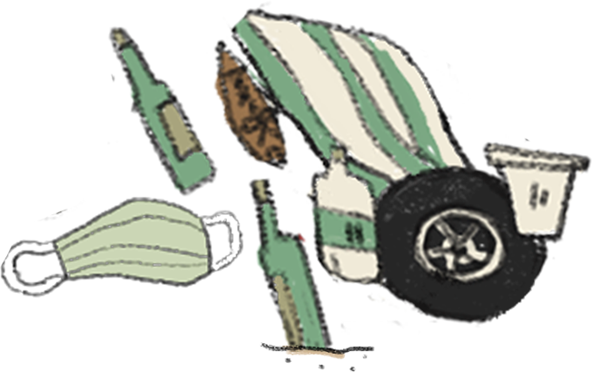
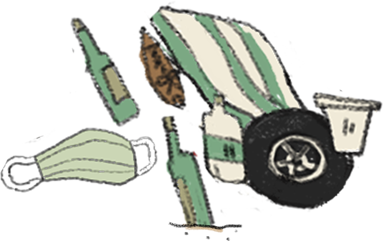

你不能不知道的海廢知識
◆ 九成的海洋垃圾都是塑膠製品，而其中「塑膠瓶蓋」佔最大比例，其次是寶特瓶、菸蒂和吸管
◆ 2019台灣淨灘活動中，分析出「與飲食相關的一次性廢棄物」佔最大比例，像是寶特瓶、瓶蓋...等等，達69.6%
◆ 若垃圾量持續不減反增，到了2050年，流入海中的垃圾將會跟海裡的一樣重了
我們都在餵海洋吃「垃圾食物」


我們都在餵海洋吃「垃圾食物」
 



臺灣海岸上的垃圾相當於
每100公尺
可裝滿13袋大垃圾袋
這些垃圾大多來自跟著洋流漂流上岸的海洋廢棄物和被我們丟棄的垃圾
最常見的即為塑膠垃圾，也有漁業廢棄物，像是浮標和魚網...等等
若是讓它們流入海洋，則有極大的機會讓魚類被魚網纏住而死亡
你不能不知道的海廢知識
◆ 九成的海洋垃圾都是塑膠製品，而其中「塑膠瓶蓋」佔最大比例，其次是寶特瓶、菸蒂和吸管
◆ 2019台灣淨灘活動中，分析出「與飲食相關的一次性廢棄物」佔最大比例，像是寶特瓶、瓶蓋...等等，達69.6%
◆ 若垃圾量持續不減反增，到了2050年，流入海中的垃圾將會跟海裡的一樣重了
我們可能會覺得垃圾在大海裡，並沒有解決方法
但其實我們每個人都能為海洋再多盡一份心力！
一個夾子和一個垃圾袋就可以開始！
讓海洋與沙灘留下美好回憶而非垃圾。
點擊垃圾，還給海洋一個潔白的沙灘吧！